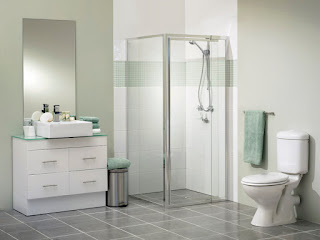

Kaca Shower Kamar Mandi Bima
Sedangkan kamar mandi termasuk ruangan yang kecil dibanding lainnya, kebutuhannya pada sebuah bangunan terbukti sama sekali tidak dapat dipisahkan. Sekarang ini, kamar mandi telah hadir dengan desain modern yang hemat ruang, dimana dia mengaplikasikan shower sebagai sarana pembersihan yang praktis dan kaca sebagai partisi pembatas antara kamar mandi.
Jasa Pemasangan Kaca Kamar Mandi di Bima

Disini kami menawarkan jasa pasang kaca kamar mandi Bima atau kaca shower yang dapat anda pesan lantas layak kebutuhan. Anda dapat lihat alangkah banyak bangunan besar di pusat kota yang justru menerapkan partisi kaca untuk menyekat bagian ruang kamar mandi satu dengan lainnya, pun dalam ruangan kamar mandi 4 m2 saja dapat mereka bagi menjadi 3 – 7 slot pintu kamar mandi. Tiap proses pemasangan kaca kamar mandi kami dikerjakan oleh energi kerja profesional, dimana ia sudah berpengalaman dalam perhitungan kaca yang pas dan cara kerja finishing yang rapi.
Jual Shower Screen Pintu Kaca Kamar Mandi di Bima
Sekiranya anda hendak memasang partisi kaca ini, maka shower screen pintu jangan tempatkan di area yang acap kali terkena perubahan secara drastis. Bahan material kaca memang tak terpungkiri gampang sekali pecah, apalagi seandainya dia ditempatkan pada ruangan yang memiliki temperatur cepat sekali berubah. Kini ini dapat membuat kaca shower menjadi pesat menyusut atau memuai yang dapat membuatnya gampang pecah.
Kaca tempered untuk kamar mandi tersedia dengan ukuran ketebalan yang berbeda-beda, ada 8 mm hingga 10 mm. Anda bisa memilih tiap-tiap macam kaca tempered untuk kamar mandi ini pada kami! Jikalau tersedia komplit dengan harga murah. Untuk penerapan kaca kamar mandi di ruangan yang sempit, benar-benar disarankan untuk memilih kaca tempered dengan ketebalan 8 mm. Ukuran 8 mm sudah termasuk standar yang aman. Untuk isu lebih lanjut mengenai ukuran yang pas, anda dapat lakukan konsultasi bersama kami!
Harga Pasang Kaca Shower
Pengaplikasian shower pada kamar mandi menjadikan suasana kamar mandi yang lebih rapi dan bersih. Dengan menerapkan shower, cara pembersihan lebih praktis ketimbang memakai konsep bak air. Dengan gaya kamar mandi seperti ini, ruang kamar mandi akan lebih terjaga secara khusus untuk zona berair dan keringnya.
Harga pasang kaca shower Bima yang kami tawarkan tergantu ketebalan kaca yang anda pilih dan seberapa besar ruang yang anda meminta. Sekarang? seketika kami mensupply produk kaca tempered untuk shower screen lantas dari pabrik sehingga kualitas dan harga yang didapat tentu berbanding. Dalam layanan ini, kami siap menerima pesanan jasa pasang kaca shower untuk tempat sekitar Surabaya, Sidoarjo, Mojokerto, Gresik, dan Bangkalan. Jenis hubungi kami untuk melakukan pemesanan!
Harga Kaca Tempered Kamar Mandi di Bima
Berapa harga yang ditawarkan untuk kaca tempered kamar mandi? Kaca tempered telah diproduksi dari kaca float yang bermutu melewati proses pemanasan kemudian didinginkan dalam waktu yang kencang. Cara cara kerja produksinya hal yang demikian, tidak heran apabila kaca ini memang 5 kali lebih kuat dari macam kaca umum meskipun ketebalannya sama. Kaca tempered pun lebih kuat menahan tekanan dari dua sisi.
Berapa harga kaca tempered kamar mandi? Hubungi kami untuk temukan upadate harga terkini. Sedangkan familiar dibandrol dengan harga mahal, melainkan disini kami menawarkan harga yang lebih murah bagi anda! Bagi anda yang membutuhkan jenis kaca ini, segera hubungi kontak kami! Ada potongan harga menarik bagi anda..
Harga Kaca Pembatas / Penyekat Shower Kamar Mandi
Sebab cuma sebagai penyekat shower kamar mandi terbaik saja, penerapan kaca sebagai penyekat rupanya juga berguna untuk meminimalisir resiko terjadinya kebocoran. Karena kaca tempered memang menjadi andalan untuk kebutuhan ini. Dalam membeli kaca tempered, anda semestinya menghitung dengan benar ukuran tinggi dan lebar yang diperlukan. Hanya kaca tempered termasuk kaca yang dipasarkan segera jadi, kalaupun seandainya anda memotongnya, hal ini bisa merubah kwalitas kwalitas yang dimiliki.
Untuk itulah sebaiknya anda mengaplikasikan jasa pasang sekat kamar mandi ini seketika pada ahlinya. Dengan memesan jasa kami, anda tidak perlu lagi repot mengerjakan perhitungan kebutuhan kaca maupun metode pemasangan kaca terbaik bagi ruang kamar mandi anda. Bagi anda yang membutuhkan kaca pembatas kamar mandi dan jasa pasang shower screen, kami menawarkan jasa pemasangan shower kamar mandi bagi anda yang membutuhkan! Pun desain ruang kamar mandi yang anda butuhkan, kami siap memenuhinya.
Cara Memasang Kamar Mandi Kaca
Pemasangan kaca kamar mandi memang tak gampang, pun anda wajib lakukan amati mengenai kondisi bangunan sebelum melaksanakan teknik pemasangan. Berikut yaitu 2 sistem yang dapat digunakan:
1. Teknik sekrel
Pemasangan sistem ini dilakukan dengan membelah komponen dinding keramik yang sudah dipastikan bahwa bagian dalamnya tidak terdapat aliran pipa air
2. Dengan metode glass konektor
Pengaplikasian metode yang memang menciptakan finishing rapi dan bagus, cara ini banyak digunakan bila memang keadaan pertama tidak bisa dipilih. Glass konektor yaitu pemasangan kaca dengan posisi beridri melewati cara konektor pada dinding.
Harga Kamar Mandi Kaca Minimalis di Bima
Gaya minimalis sekarang tak hanya diminati untuk desain bangunan dan sebagian ruangan saja, minimalis menjadikan ruangan kecil tetapi amat fungsional. Dengan desain kamar mandi yang minimalis, tentu anda bisa menghemat ruang dan lebih rapi.
Untuk anda yang ingin beralih desain kamar mandi lama menjadi lebih modern, aplikasikan saja partisi screen kamar mandi ini. Kecuali bisa memisahkan zona basah dan kering, kamar mandi desain ini pada era sekarang lebih banyak diminati karena nilai keindahan yang dimiliki. Dengan mengaplikasikan kaca sebagai partisi dinding, anda akan lebih gampang dalam membersihkan karena dia bebas lumut. lagi jika menggunakan tipe kaca tempered sebagai shower screen.
Sekian kabar yang dapat saya sampaikan. Kami harap anda tak perlu kebingungan lagi mengenai metode pemasangan kaca shower screen kamar mandi Bima. Kalau anda berminat memakai jasa kami, lantas hubungi kontak yang tersedia! Bila anda membutuhkan jasa kami, jangan sungkan untuk langsung menghubungi kontak yang tersedia. Kami siap melayani tiap-setiap keperluan kaca bangunan anda!
Informasi Lengkap Pemesanan
Google Maps: https://www.google.com/maps/d/u/0/viewer?mid=1I5MJD15eG4u4a5bgD4SWwLmUemJgyEPx&ll=-7.27380280025364%2C112.65243155000007&z=18
Note: https://www.facebook.com/notes/distributor-of-industrial-supply/pabrik-supplier-kaca-shower-kaca-pembatas-shower-kamar-mandi/1785693275063885/
Event: https://www.facebook.com/events/308143373033869/
Portfolio Produk: https://www.facebook.com/1681607345472479/photos/?tab=album&album_id=1712628919036988
Behance: https://www.behance.net/gallery/60203409/Jasa-Pemasangan-Kaca-Shower